일반기계기사 (2015-03-08 기출문제)
1과목: 재료역학
1. 지름 10mm 스프링강으로 만든 코일스프링에 2kN의 하중을 작용시켜 전단 응력이 250MPa를 초과하지 않도록 하려면 코일의 지름을 어느 정도로 하면 되는가?(오류 신고가 접수된 문제입니다. 반드시 정답과 해설을 확인하시기 바랍니다.)
- 4cm
- 5cm
- 6cm
- 7cm
(정답률: 27%)

2. 다음 그림 중 봉속에 저장된 탄성에너지가 가장 큰 것은? (단, E = 2E1 이다.)
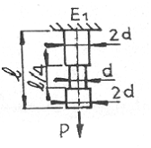
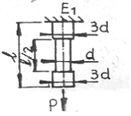
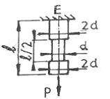
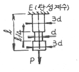
(정답률: 32%)
3. 그림과 같은 트러스에서 부재 AB가 받고 있는 힘의 크기는 약 몇 N정도인가?
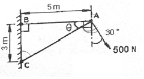
- 781
- 894
- 972
- 1081
(정답률: 53%)
4. 안지름이 80mm, 바깥지름이 90mm이고 길이가 3m인 좌굴 하중을 받는 파이프 압축 부재의 세장비는 얼마 정도인가?
- 100
- 103
- 110
- 113
(정답률: 52%)
5. 탄성(elasticity)에 대한 설명으로 옳은 것은?
- 물체의 변형율을 표시하는 것
- 물체에 작용하는 외력의 크기
- 물체에 영구변형을 일어나게 하는 성질
- 물체에 가해진 외력이 제거되는 동시에 원형으로 되돌아가려는 성질
(정답률: 62%)
6. 그림과 같이 자유단에 M=40Nㆍm의 모멘트를 받는 외팔보의 최대 처짐량은? (단, 탄성계수 E=200GPa, 단면2차 모멘트 I=50cm4)
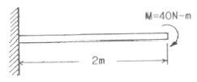
- 0.08cm
- 0.16cm
- 8.00cm
- 10.67cm
(정답률: 53%)
7. 그림과 같이 전길이에 걸쳐 균일 분포하중 ω를 받는 보에서 최대처짐 δmax를 나타내는 식은? (단, 보의 굽힘강성 EI는 일정하다.)
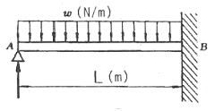
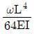
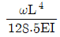
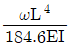
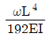
(정답률: 48%)
8. 안지름 1m, 두께 5mm의 구형 압력 용기에 길이 15mm스트레인 게이지를 그림과 같이 부착하고, 압력을 가하였더니 게이지의 길이가 0.009mm만큼 증가했을 때, 내압 p의 값은? (단, E=200GPa, v=0.3)
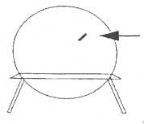
- 3.43MPa
- 6.43MPa
- 13.4MPa
- 16.4MPa
(정답률: 25%)
9. 직경이 d이고 길이가 L인 균일한 단면을 가진 직선축이 전체 길이에 걸쳐 토크 t0가 작용할 때, 최대 전단응력은?
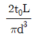
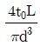
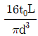
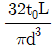
(정답률: 56%)
10. 비틀림 모멘트를 T, 극관성 모멘트를 IP , 축의 길이를 L, 전단 탄성계수를 G라고 할 때, 단위 길이당 비틀림각은?
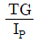
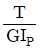
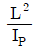
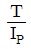
(정답률: 60%)
11. 2축 응력에 대한 모어(Mohr)원의 설명으로 틀린 것은?
- 원의 중심은 원점의 상하 어디라도 놓일 수 있다.
- 원의 중심은 원점좌우의 응력축상에 어디라도 놓일 수 있다.
- 이 원에서 임의의 경사면상의 응력에 관한 가능한 모든 지식을 얻을 수 있다.
- 공액응력 σn과 σn'의 합은 주어진 두 응력의 합 σx+σy와 같다.
(정답률: 47%)
12. 포아송의 비 0.3, 길이 3m인 원형단면의 막대에 축방향의 하중이 가해진다. 이 막대의 표면에 원주방향으로 부착된 스트레인 게이지가 -1.5×10-4의 변형률을 나타낼 때, 이 막대의 길이 변화로 옳은 것은?
- 0.135mm 압축
- 0.135mm 인장
- 1.5mm 압축
- 1.5mm 인장
(정답률: 37%)
13. 길이가 L인 균일단면 막대기에 굽힘 모멘트 M이 그림과 같이 작용하고 있을 때, 막대에 저장된 탄성 변형 에너지는? (단, 막대기의 굽힘강성 EI는 일정하고, 단면적은 A이다.)
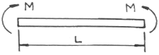
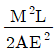
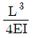
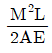
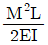
(정답률: 45%)
14. 주철제 환봉이 축방향 압축응력 40MPa과 모든 반경방향으로 압축응력 10MPa를 받는다. 탄성계수 E=100GPa, 포아송비 v=0.25, 환봉의 직경 d=120mm,길이 L=200mm일 때, 실린더 체적의 변화량 △V는 몇 mm3인가?
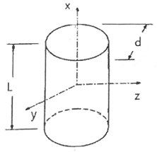
- -121
- -254
- -428
- -679
(정답률: 23%)
15. 그림과 같이 두께가 20mm, 외경이 200mm인 원관을 고정벽으로부터 수평으로 4m만큼 돌출시켜 물을 방출한다. 원관내에 물이 가득차서 방출될 때 자유단의 처짐은 몇 mm인가? (단, 원관 재료의 탄성계수 E = 200GPa, 비중은 7.8이고, 물의 밀도는 1000kg/m3이다.)
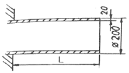
- 9.66
- 7.66
- 5.66
- 3.66
(정답률: 20%)
16. 높이 h, 폭 b인 직사각형 단면을 가진 보 A와 높이 b, 폭 h인 직사각형 단면을 가진 보 B의 단면 2차 모멘트의 비는? (단, h = 1.5b)
- 1.5 : 1
- 2.25 : 1
- 3.375 : 1
- 5.06 : 1
(정답률: 54%)
17. 그림과 같은 보에서 발생하는 최대굽힘 모멘트는?
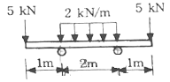
- 2kNㆍm
- 5kNㆍm
- 7kNㆍm
- 10kNㆍm
(정답률: 51%)
18. 지름이 25mm이고 길이가 6m인 강봉의 양쪽 단에 100kN의 인장력이 작용하여 6mm가 늘어났다. 이 때의 응력과 변형률은? (단, 재료는 선형 탄성 거동을 한다.)
- 203.7MPa, 0.01
- 203.7kPa, 0.01
- 203.7MPa, 0.001
- 203.7kPa, 0.001
(정답률: 60%)
19. 균일 분포하중(q)을 받는 보가 그림과 같이 지지되어 있을 때, 전단력 선도는? (단, A지점은 핀, B지점은 롤러로 지지되어있다.)
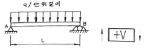
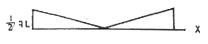
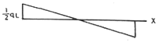
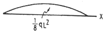
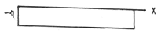
(정답률: 55%)
20. 최대 굽힘모멘트 8kNㆍm를 받는 원형단면의 굽힘응력을 60MPa로 하려면 지름을 약 몇 cm로 해야 하는가?
- 1.11
- 11.1
- 3.01
- 30.1
(정답률: 56%)
2과목: 기계열역학
21. 전동기에 브레이크를 설치하여 출력 시험을 하는 경우, 축출력 10kW의 상태에서 1시간 운전을 하고, 이때 마찰열을 20℃의 주위에 전할 때 주위의 엔트로피는 어느 정도 증가하는가?
- 123 kJ/K
- 133 kJ/K
- 143 kJ/K
- 153 kJ/K
(정답률: 57%)
22. 밀폐계에서 기체의 압력이 500kPa로 일정하게 유지되면서 체적이 0.2m3에서 0.7m3로 팽창하였다. 이 과정 동안에 내부에너지의 증가가 60KJ 이라면 계가 한 일은?
- 450 kJ
- 350 kJ
- 250 kJ
- 150 kJ
(정답률: 59%)
23. 난방용 열펌프가 저온 물체에서 1500kJ/h의 열을 흡수하여 고온 물체에 2100kJ/h로 방출한다. 이 열펌프의 성능계수는?
- 2.0
- 2.5
- 3.0
- 3.5
(정답률: 49%)
24. 오토사이클에 관한 설명 중 틀린 것은?
- 압축비가 커지면 열효율이 증가한다.
- 열효율이 디젤사이클보다 좋다.
- 불꽃점화 기관의 이상사이클이다.
- 열의 공급(연소)이 일정한 체적하에 일어난다.
(정답률: 45%)
25. 밀폐 시스템의 가역 정압 변화에 관한 다음 사항 중 옳은 것은? (단, U : 내부에너지, Q : 전달열, H : 엔탈피, V : 체적, W : 일 이다.)
- dU = dQ
- dH = dQ
- dV = dQ
- dW = dQ
(정답률: 54%)
26. 과열기가 있는 랭킨사이클에 이상적인 재열사이클을 적용할 경우에 대한 설명으로 틀린 것은?
- 이상 재열사이클의 열효율이 더 높다.
- 이상 재열사이클의 경우 터빈 출구 건도가 증가한다.
- 이상 재열사이클의 기기비용이 더 많이 요구된다.
- 이상 재열사이클의 경우 터빈 입구 온도를 더 높일 수 있다.
(정답률: 38%)
27. 20℃의 공기(기체상수 R=0.287 kJ/kgㆍK, 정압비열 Cp= 1.004 kJ/kgㆍK) 3kg이 압력 0.1 MPa에서 등압 팽창하여 부피가 두 배로 되었다. 이 과정에서 공급된 열량은 대략 얼마인가?
- 약 252 kJ
- 약 883 kJ
- 약 441 kJ
- 약 1765 kJ
(정답률: 46%)
28. 최고온도 1300K와 최저온도 300K 사이에서 작동하는 공기표준 Brayton 사이클의 열효율은 약 얼마인가? (단, 압력비는 9, 공기의 비열비는 1.4이다.)
- 30%
- 36%
- 42%
- 47%
(정답률: 49%)
29. 대기압 하에서 물의 어는 점과 끓는 점 사이에서 작동하는 카르노사이클(Carnot cycle) 열기관의 열효율은 약 몇 %인가?
- 2.7
- 10.5
- 13.2
- 26.8
(정답률: 58%)
30. 물질의 양을 1/2로 줄이면 강도성(강성적) 상태량의 값은?
- 1/2로 줄어든다.
- 1/4로 줄어든다.
- 변화가 없다.
- 2배로 늘어난다.
(정답률: 56%)
31. 카르노 사이클에 대한 설명으로 옳은 것은?
- 이상적인 2개의 등온과정과 이상적인 2개의 정압과정으로 이루어진다.
- 이상적인 2개의 정압과정과 이상적인 2개의 단열과정으로 이루어진다.
- 이상적인 2개의 정압과정과 이상적인 2개의 정적과정으로 이루어진다.
- 이상적인 2개의 등온과정과 이상적인 2개의 단열과정으로 이루어진다.
(정답률: 47%)
32. 대기압 하에서 물질의 질량이 같을 때 엔탈피의 변화가 가장 큰 경우는?
- 100℃ 물이 100℃ 수증기로 변화
- 100℃ 공기가 200℃ 공기로 변화
- 90℃의 물이 91℃ 물로 변화
- 80℃의 공기가 82℃ 공기로 변화
(정답률: 52%)
33. 온도 T1의 고온열원으로부터 온도 T2의 저온열원으로 열량 Q가 전달될 때 두열원의 총 엔트로피 변화량을 옳게 표현한 것은?
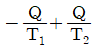
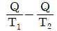
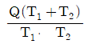
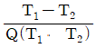
(정답률: 43%)
34. 한 사이클 동안 열역학계로 전달되는 모든 에너지의 합은?
- 0 이다.
- 내부에너지 변화량과 같다.
- 내부에너지 및 일량의 합과 같다.
- 내부에너지 및 전달열량의 합과 같다.
(정답률: 39%)
35. 증기압축 냉동기에는 다양한 냉매가 사용된다. 이러한 냉매의 특징에 대한 설명으로 틀린 것은?
- 냉매는 냉동기의 성능에 영향을 미친다.
- 냉매는 무독성, 안정성, 저가격 등의 조건을 갖추어야 한다.
- 우수한 냉매로 알려져 널리 사용되던 염화불화 탄화수소(CFC) 냉매는 오존층을 파괴한다는 사실이 밝혀진 이후 사용이 제한되고 있다.
- 현재 CFC냉매 대신에 R-12(CCI2F2)가 냉매로 사용되고 있다.
(정답률: 55%)
36. 저온 열원의 온도가 TL 고온 열원의 온도가 TH인 두 열원 사이에서 작동하는 이상적인 냉동 사이클의 성능계수를 향상시키는 방법으로 옳은 것은?
- TL을 올리고 (TH-TL)을 올린다.
- TL을 올리고 (TH-TL)을 줄인다.
- TL을 내리고 (TH-TL)을 올린다.
- TL을 내리고 (TH-TL)을 줄인다.
(정답률: 56%)
37. 단열된 용기 안에 두 개의 구리 블록이 있다. 블록 A는 10kg, 온도 300K이고, 블록 B는 10kg, 900K이다. 구리의 비열은 0.4kJ/kgㆍK일 때, 두 블록을 접촉시켜 열교환이 가능하게 하고 장시간 놓아두어 최종 상태에서 두 구리 블록의 온도가 같아졌다. 이 과정 동안 시스템의 엔트로피 증가량(kJ/K)은?
- 1.15
- 2.04
- 2.77
- 4.82
(정답률: 31%)
38. 성능계수(COP)가 0.8인 냉동기로서 7200 kJ/h로 냉동하려면, 이에 필요한 동력은?
- 약 0.9 kW
- 약 1.6 kW
- 약 2.0 kW
- 약 2.5 kW
(정답률: 48%)
39. 냉동 효과가 70kW인 카르노 냉동기의 방열기 온도가 20℃, 흡열기 온도가 -10℃이다. 이 냉동기를 운전하는데 필요한 이론 동력(일률)은?
- 약 6.02 kW
- 약 6.98 kW
- 약 7.98 kW
- 약 8.99 kW
(정답률: 50%)
40. 어떤 이상기체 1kg이 압력 100kPa,온도 30℃의 상태에서 체적 0.8m3을 점유한다면 기체상수는 몇 kJ/kgㆍK인가?
- 0.251
- 0.264
- 0.275
- 0.293
(정답률: 60%)
3과목: 기계유체역학
41. 다음 중 기체상수가 가장 큰 기체는?
- 산소
- 수소
- 질소
- 공기
(정답률: 50%)
42. 그림과 같이 큰 댐 아래에 터빈이 설치되어 있을 때, 마찰손실 등을 무시한 최대 발생 가능한 터빈의 동력은 약 얼마인가? (단, 터빈 출구관의 안지름은 1m이고, 수면과 터빈출구관중심까지의 높이차는 20m이며, 출구속도는 10m/s이고, 출구압력은 대기압이다.)
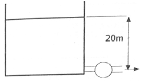
- 1150 kW
- 1930 kW
- 1540 kW
- 2310 kW
(정답률: 24%)
43. 경계층 내의 무차원 속도분포가 경계층 끝에서 속도 구배가 없는 2차원 함수로 주어졌을 때 경계층의 배제두께(δ)의 관계로 올바른 것은?
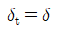
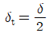
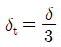
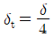
(정답률: 28%)
44. 프로펠러 이전 유속을 u0, 이후 유속을 u2라 할때 프로펠러의 추진력 F는 얼마인가? (단, 유체의 밀도와 유량 및 비중량을 p,Q,r라 한다.)
- F=pQ(u2-u0)
- F=pQ(u0-u2)
- F=rQ(u2-u0)
- F=rQ(u0-u2)
(정답률: 46%)
45. 비중이 0.8인 기름이 지름 80mm인 곧은 원관 속을 90L/min로 흐른다. 이때의 레이놀즈수는 약 얼마인가? (단, 이 기름의 점성계수는 5×10-4kg/(sㆍm)이다.)
- 38200
- 19100
- 3820
- 1910
(정답률: 45%)
46. 2차원 비압축성 정상류에서 x, y의 속도 성분이 각각 u=4y, v=6x로 표시될 때, 유선의 방정식은 어떤 형태를 나타내는가?
- 직선
- 포물선
- 타원
- 쌍곡선
(정답률: 31%)
47. 지름 20cm인 구의 주위에 밀도가 1000kg/m3, 점성계수는 1.8×10-3Paㆍs인 물이 2m/s의 속도로 흐르고 있다. 항력계수가 0.2인 경우 구에 작용하는 항력은 약 몇 N인가?
- 12.6
- 200
- 0.2
- 25.12
(정답률: 51%)
48. 산 정상에서의 기압은 93.8kPa이고, 온도는 11℃이다. 이때 공기의 밀도는 약 몇 kg/m3인가? (단, 공기의 기체상수는 287J/kgㆍ℃이다.)
- 0.00012
- 1.15
- 29.7
- 1150
(정답률: 50%)
49. 비중이 0.8인 오일을 직경이 10cm인 수평원관을 통하여 1km 떨어진 곳까지 수송하려고 한다. 유량이 0.02m3/s, 동점성계수가 2×10-4m2/s라면 관 1km에서의 손실 수두는 약 얼마인가?
- 33.2m
- 332m
- 16.6m
- 166m
(정답률: 46%)
50. 반지름 3cm, 길이 15m, 관마찰계수 0.025인 수평원관 속을 물이 난류로 흐를 때 관 출구와 입구의 압력차가 9800Pa이면 유량은?
- 5.0m3/s
- 5.0L/s
- 5.0cm3/s
- 0.5L/s
(정답률: 37%)
51. 정지상태의 거대한 두 평판 사이로 유체가 흐르고 있다. 이 때 유체의 속도분포(u)가
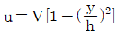
일 때, 벽면 전단응력은 약 몇 N/m2인가? (단, 유체의 정성계수는 4Nㆍs/m2이며, 평균속도 V는 0.5m/s, 유로 중심으로부터 벽면까지의 거리 h는 0.01m이며, 속도 분포는 유체 중심으로부터의 거리(y)의 함수이다.)- 200
- 300
- 400
- 500
(정답률: 38%)
52. 용기에 너비 4m, 깊이 2m인 물이 채워져 있다. 이 용기가 수직 상방향으로 9.8m2/s로 가속될 때, B점과 A점의 압력차 PB-PA는 약 몇 kPa인가?
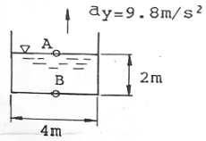
- 9.8
- 19.6
- 39.2
- 78.4
(정답률: 29%)
53. 다음 중 점성계수 µ의 차원으로 옳은 것은? (단, M : 질량, L : 길이, T : 시간 이다.)
- ML-1T2
- ML-2T-2
- ML-1T-1
- ML-2T
(정답률: 49%)
54. 검사체적에 대한 설명으로 옳은 것은?
- 검사체적은 항상 직육면체로 이루어진다.
- 검사체적은 공간상에서 등속 이동하도록 설정해도 무방하다.
- 검사체적내의 질량은 변화하지 않는다.
- 검사체적을 통해서 유체가 흐를 수 없다.
(정답률: 34%)
55. 그림과 같은 수문에서 멈춤장치 A가 받는 힘은 약 몇 kN인가? (단, 수문의 폭은 3m이고, 수은의 비중은 13.6이다.)
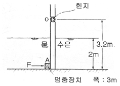
- 37
- 510
- 586
- 879
(정답률: 24%)
56. 역학적 상사성(相似性)이 성립하기 위해 프루드(Froude)수를 같게 해야 되는 흐름은?
- 점성 계수가 큰 유체의 흐름
- 표면 장력이 문제가 되는 흐름
- 자유표면을 가지는 유체의 흐름
- 압축성을 고려해야 되는 유체의 흐름
(정답률: 50%)
57. 다음 중 유동장에 입자가 포함되어 있어야 유속을 측정할 수 있는 것은?
- 열선속도계
- 정압피토관
- 프로펠러 속도계
- 레이저 도플러 속도계
(정답률: 38%)
58. 2차원 직각좌표계(x,y)에서 속도장이 다음과 같은 유동이 있다. 유동장 내의 점(L, L)에서의 유속의 크기는? (단, i, j는 각각 x, y 방향의 단위벡터를 나타낸다.)
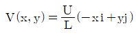
- 0
- U
- 2U
- √2U
(정답률: 38%)
59. 파이프 내에 점성유체가 흐른다. 다음 중 파이프 내의 압력 분포를 지배하는 힘은?
- 관성력과 중력
- 관성력과 표면장력
- 관성력과 탄성력
- 관성력과 점성력
(정답률: 58%)
60. 그림과 같은 노즐에서 나오는 유량이 0.078m3/s일 때 수위(H)는 얼마인가? (단, 노즐 출구의 안지름은 0.1m이다.)
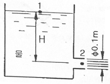
- 5m
- 10m
- 0.5m
- 1m
(정답률: 49%)
4과목: 기계재료 및 유압기기
61. Fe-C 상태도에서 온도가 가장 낮은 것은?
- 공석점
- 포정점
- 공정점
- 순철의 자기변태점
(정답률: 55%)
62. 금형재료로서 경도와 내마모성이 우수하고 대량 생산에 적합한 소결합금은?
- 주철
- 초경합금
- Y합금강
- 탄소공구강
(정답률: 42%)
63. 특수강에서 합금원소의 영향에 대한 설명으로 옳은 것은?
- Ni은 결정입자의 조절
- Si는 인성 증가, 저온 충격 저항 증가
- V, Ti는 전자기적 특성, 내열성 우수
- Mn, W은 고온에 있어서의 경도와 인장강도 증가
(정답률: 47%)
64. 탄소강에 함유된 인(P)의 영향을 바르게 설명한 것은?
- 강도와 경도를 감소시킨다.
- 결정립을 미세화시킨다.
- 연신율을 증가시킨다.
- 상온 취성의 원인이 된다.
(정답률: 66%)
65. 심냉(sub-zero) 처리의 목적의 설명으로 옳은 것은?
- 자경강에 인성을 부여하기 위함
- 급열ㆍ급냉시 온도 이력현상을 관찰하기 위함
- 항온 담금질하여 베이나이트 조직을 얻기 위함
- 담금질 후 시효변형을 방지하기 위해 잔류오스테나이트를 마텐자이트 조직으로 얻기 위함
(정답률: 68%)
66. 일정 중량의 추를 일정 높이에서 떨어뜨려 그 반발하는 높이로 경도를 나타내는 방법은?
- 브리넬 경도시험
- 로크웰 경도시험
- 비커즈 경도시험
- 쇼어 경도시험
(정답률: 61%)
67. 합금과 특성의 관계가 옳은 것은?
- 규소강 : 초내열성
- 스텔라이드(stellite) : 자성
- 모넬금속(monel metal) : 내식용
- 엘린바(Fe - Ni - Cr) : 내화학성
(정답률: 45%)
68. 표준형 고속도 공구강의 주성분으로 옳은 것은?
- 18% W, 4% Cr, 1% V, 0.8~0.9% C
- 18% C, 4% Mo, 1% V, 0.8~0.9% Cu
- 18% W, 4% V, 1% Ni, 0.8~0.9% C
- 18% C, 4% Mo, 1% Cr, 0.8~0.9% Mg
(정답률: 60%)
69. 다음 중 ESD (Extra Super Duralumin) 합금계는?
- Al-Cu-Zn-Ni-Mg-Co
- Al-Cu-Zn-Ti-Mn-Co
- Al-Cu-Sn-Si-Mn-Cr
- Al-Cu-Zn-Mg-Mn-Cr
(정답률: 59%)
70. 조선 압연판으로 쓰이는 것으로 편석과 불순물이 적은 균질의 강은?(오류 신고가 접수된 문제입니다. 반드시 정답과 해설을 확인하시기 바랍니다.)
- 림드강
- 킬드강
- 캡트강
- 세미킬드강
(정답률: 58%)
71. 다음 중 상시 개방형 밸브는?
- 감압밸브
- 언로드 밸브
- 릴리프 밸브
- 시퀀스 밸브
(정답률: 48%)
72. 유압모터의 종류가 아닌 것은?
- 나사 모터
- 베인 모터
- 기어 모터
- 회전피스톤 모터
(정답률: 54%)
73. 유압장치에서 실시하는 플러싱에 대한 설명으로 옳지 않은 것은?
- 플러싱하는방법은플러싱오일을 사용하는 방법과 산세정법 등이 있다.
- 플러싱은 유압 시스템의 배관 계통과 시스템 구성에 사용되는 유압 기기의 이물질을 제거하는 작업이다.
- 플러싱 작업을 할 때 플러싱유의 온도는 일반적인 유압시스템의 유압유 온도보다 낮은 20~30℃정도로 한다.
- 플러싱 작업은 유압기계를 처음 설치하였을 때, 유압작동유를 교환할 때, 오랫동안 사용하지 않던 설비의 운전을 다시 시작할 때, 부품의 분해 및 청소 후 재조립하였을 때 실시한다.
(정답률: 63%)
74. 다음 중 펌프에서 토출된 유량의 맥동을 흡수하고, 토출된 압유를축적하여 간헐적으로 요구되는 부하에 대해서 압유를 방출하여 펌프를 소경량화 할 수 있는 기기는?
- 필터
- 스트레이너
- 오일 냉각기
- 어큐뮬레이터
(정답률: 65%)
75. 펌프의 토출 압력 3.92MPa, 실제 토출 유량은 50l/min이다. 이 때 펌프의 회전수는1000rpm, 소비동력이 3.68 kW 라고 하면 펌프의 전효율은 얼마인가?
- 80.4%
- 84.7%
- 88.8%
- 92.2%
(정답률: 38%)
76. 액추에이터에 관한 설명으로 가장 적합한 것은?
- 공기 베어링의 일종이다.
- 전기에너지를 유체에너지로 변환시키는 기기이다.
- 압력에너지를 속도에너지로 변환시키는 기기이다.
- 유체에너지를 이용하여 기계적인 일을 하는 기기이다.
(정답률: 63%)
77. 배관용 플랜지 등과 같이 정지 부분의 밀봉에 사용되는 실(seal)의 총칭으로 정지용 실이라고도 하는 것은?
- 초크(choke)
- 개스킷(gasket)
- 패킹(packing)
- 슬리브(sleeve)
(정답률: 61%)
78. 점성계수(coefficient of viscosity)는 기름의 중요 성질이다. 점성이 지나치게 클 경우 유압기기에 나타나는 현상이 아닌 것은?
- 유동저항이 지나치게 커진다.
- 마찰에 의한 동력손실이 증대된다.
- 부품사이에 윤활작용을 하지 못한다.
- 밸브나 파이프를 통과할 때 압력손실이 커진다.
(정답률: 51%)
79. 길이가 단면 치수에 비해서 비교적 짧은 죔구(restriction)는?
- 초크(choke)
- 오리피스(orifice)
- 벤트 관로(vent line)
- 휨 관로(flexible line)
(정답률: 57%)
80. 피스톤 부하가 급격히 제거되었을 때 피스톤이 급진하는 것을 방지하는 등의 속도제어회로로 가장 적합한 것은?
- 증압 회로
- 시퀀스 회로
- 언로드 회로
- 카운터 밸런스 회로
(정답률: 62%)
5과목: 기계제작법 및 기계동력학
81. 방전가공에 대한 설명으로 틀린 것은?
- 경도가 높은 재료는 가공이 곤란하다.
- 가공 전극은 동, 흑연 등이 쓰인다.
- 가공정도는 전극의 정밀도에 따라 영향을 받는다.
- 가공물과 전극사이에 발생하는 아크(arc) 열을 이용한다.
(정답률: 55%)
82. 단조의 기본 작업 방법에 해당하지 않는 것은?
- 늘리기(drawing)
- 업세팅(up-setting)
- 굽히기(bending)
- 스피닝(spinning)
(정답률: 53%)
83. Al을 강의 표면에 침투시켜 내스케일성을 증가시키는 금속 침투 방법은?
- 파커라이징(parkerizing)
- 칼로라이징(calorizing)
- 크로마이징(chromizing)
- 금속용사법(metal spraying)
(정답률: 61%)
84. 주조의 탕구계 시스템에서 라이저(riser)의 역할로서 틀린 것은?
- 수축으로 인한 쇳물부족을 보충한다.
- 주형 내의 가스, 기포 등을 밖으로 배출한다.
- 주형내의 쇳물에 압력을 가해 조직을 치밀화한다.
- 주물의 냉각도에 따른균열이 발생되는 것을 방지한다.
(정답률: 40%)
85. Taylor의 공구수명에 관한 실험식에서 세라믹 공구를 사용하고자 할 때 적합한 절삭속도[m/min]는 약 얼마인가? (단, VTn=C에서 n=0.5, C=200이고 공구수명은 40분이다.)
- 31.6
- 32.6
- 33.6
- 35.6
(정답률: 52%)
86. 특수가공 중에서 초경합금, 유리 등을 가공하는 방법은?
- 래핑
- 전해 가공
- 액체 호닝
- 초음파 가공
(정답률: 53%)
87. 강관을 길이방향으로 이음매 용접하는데, 가장 적합한 용접은?
- 심 용접
- 점 용접
- 프로젝션 용접
- 업셋 맞대기용접
(정답률: 38%)
88. 아래 도면과 같은 테이퍼를 가공할 때의 심압대의 편위거리[mm]는?
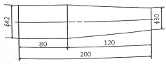
- 6
- 10
- 12
- 20
(정답률: 28%)
89. 두께가 다른 여러 장의 강재 박판(薄板)을 겹쳐서 부채설 모양으로 모은 것이며 물체 사이에 삽입하여 측정하는 기구는?
- 와이어 게이지
- 롤러 게이지
- 틈새 게이지
- 드릴 게이지
(정답률: 58%)
90. 두께 4[mm]인 탄소강판에 지름 1000[mm]의 펀칭을 할 때 소요되는 동력[kW]은 약 얼마인가? (단, 소재의 전단저항은 245.25 [MPa], 프레스 슬라이드의 평균속도는 5[m/min], 프레스의 기계효율(n)은 65%이다.)
- 146
- 280
- 396
- 538
(정답률: 41%)
91. 두 질점의 완전소성충돌에 대한 설명 중 틀린 것은?
- 반발계수가 0이다.
- 두 질점의 전체에너지가 보존된다.
- 두 질점의 전체운동량이 보존된다.
- 충돌 후, 두 질점의 속도는 서로 같다.
(정답률: 30%)
92. 그림과 같은 용수철-질량계의 고유진동수는 약 몇 Hz인가? (단, m=5kg, k1=15N/m, k2=8N/m이다.)
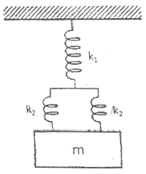
- 0.1Hz
- 0.2Hz
- 0.3Hz
- 0.4Hz
(정답률: 39%)
93. 회전속도가 2000rpm인 원심 팬이 있다. 방진고무로 탄성 지지시켜 진동 전달률을 0.3으로 하고자 할 때, 정적 수축량은 약 몇 mm 인가? (단, 방진고무의 감쇠계수는 0으로 가정한다.)
- 0.71
- 0.97
- 1.41
- 2.20
(정답률: 28%)
94. 타격연습용 투구기가 지상 1.5m 높이에서 수평으로 공을 발사한다. 공이 수평거리 16m를 날아가 땅에 떨어진다면, 공의 발사속도의 크기는 약 몇 m/s인가?
- 11
- 16
- 21
- 29
(정답률: 30%)
95. 그림에서 질량 100kg의 물체 A와 수평면 사이의 마찰계수는 0.3이며 물체 B의 질량은 30kg이다. 힘 Py의 크기는 시간(t[s])의 함수이며 Py[N]=15t2이다.t는 0s에서 물체 A가 오른쪽으로 2.0m/s로 운동을 시작한다면 t가 5s일 때 이 물체의 속도는 약 몇 m/s인가?
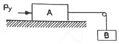
- 6.81
- 6.92
- 7.31
- 7.54
(정답률: 21%)
96. 인장코일 스프링에서 100N의 힘으로 10cm 늘어나는 스프링을 평형 상태에서 5cm만큼 늘어나게 하려면 몇 J의 일이 필요한가?
- 10
- 5
- 2.5
- 1.25
(정답률: 25%)
97. x=Aejwt인 조화운동의 가속도 진폭의 크기는?
- w2A
- wA
- wA2
- w2A2
(정답률: 43%)
98. 반경이 R인 바퀴가 미끄러지지 않고 구른다. 0점의 속도 에 대한 A점의 속도 의 비는 얼마인가?
- VA/V0=1
- VA/V0=√2
- VA/V0=2
- VA/V0=4
(정답률: 36%)
99. 반경이 r인 원을 따라서 각속도 ω, 각가속도 α로 회전할 때 법선방향 가속도의 크기는?
- rα
- rω
- rω2
- rα2
(정답률: 44%)
100. 질량 관성모멘트가 7.036kgㆍm2 인 플라이휠이 3600rpm으로 회전할 때, 이 휠이 갖는 운동에너지는 약 몇 kJ인가?
- 300
- 400
- 500
- 600
(정답률: 39%)